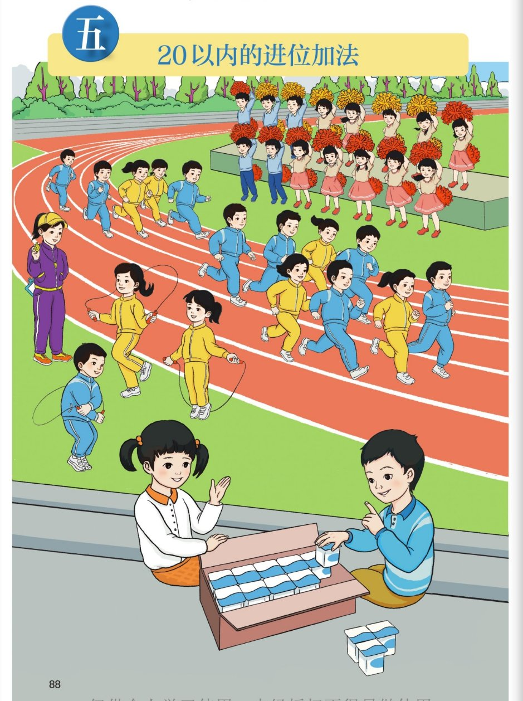
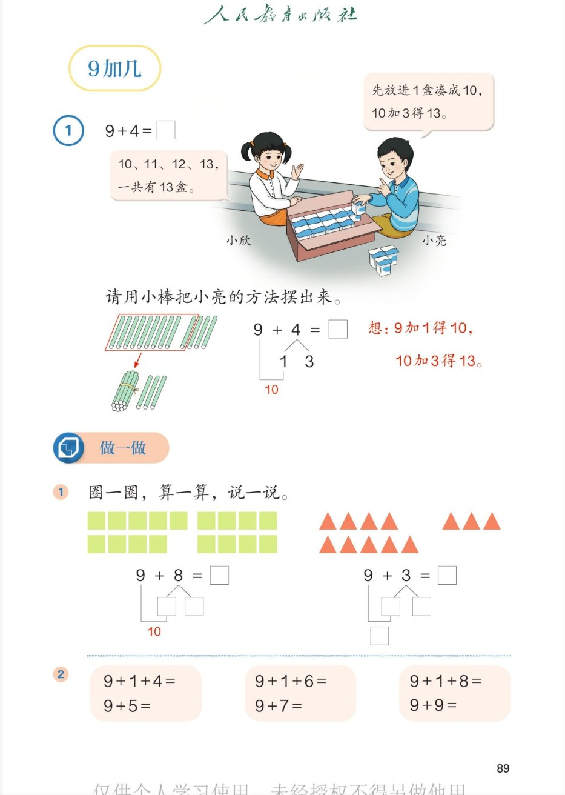
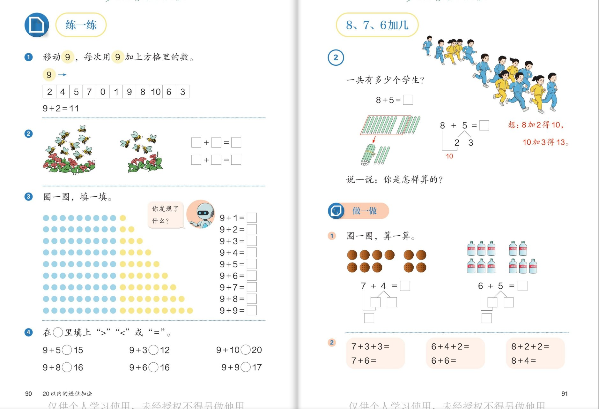
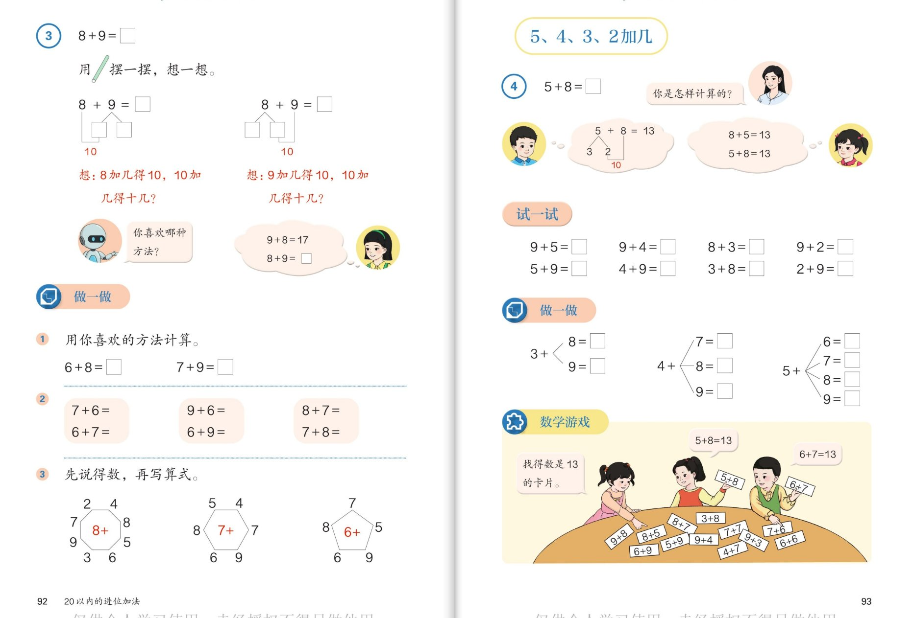
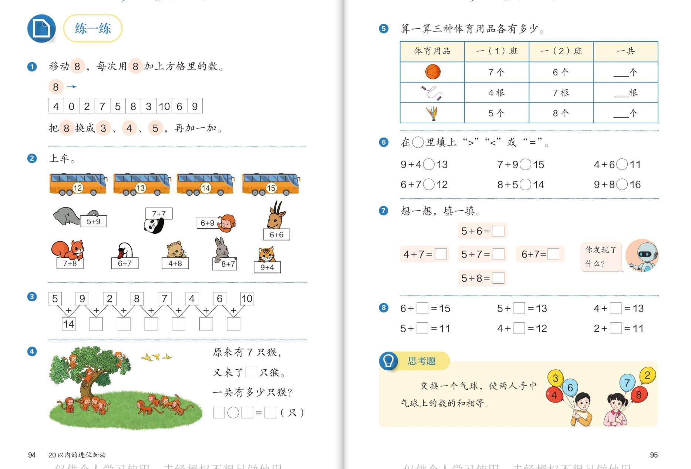
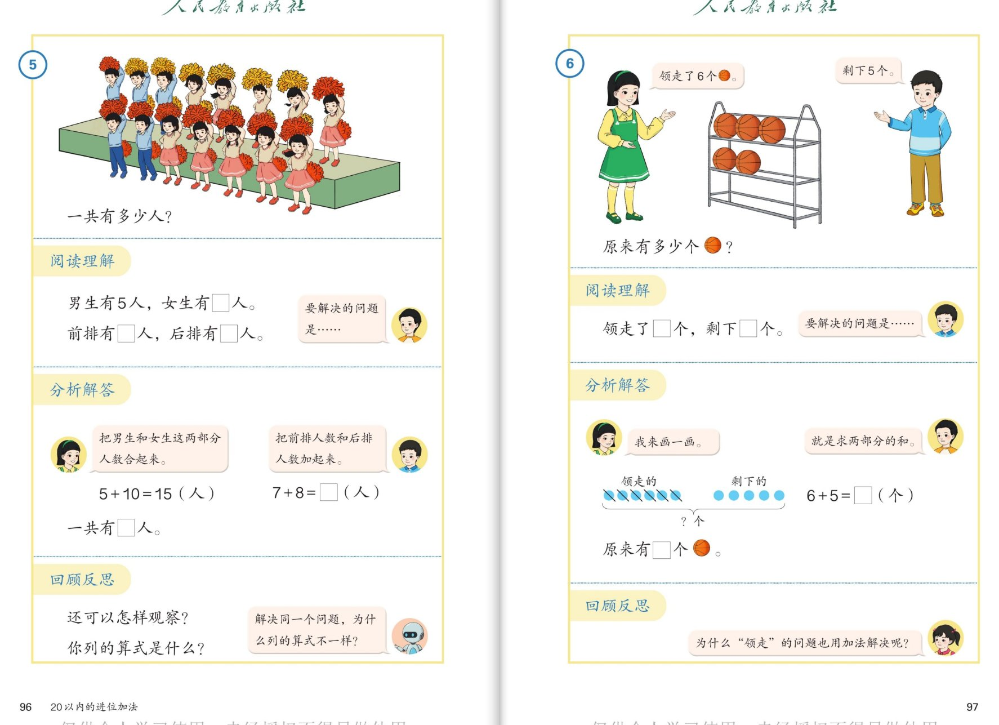
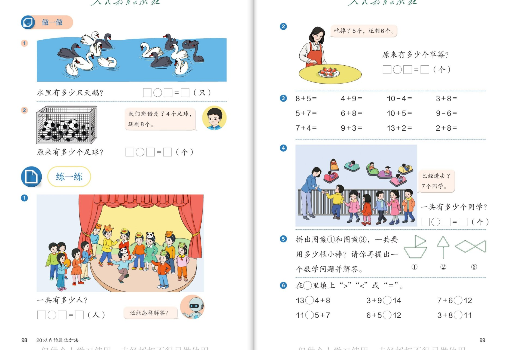

▲ 教材第88页：操场上有跑步、跳绳、啦啦队，还有两位同学在数饮料
认知👀
运动会上都有哪些活动？每个活动的人在做什么？
看答案
参考答案：有跑步的同学（在跑道上奔跑）、跳绳的同学（在甩绳跳跃）、啦啦队的同学（在台上挥舞花球喊加油），还有两位同学在旁边分发、清点饮料。🌈说法不唯一，按顺序说清楚即可。
认知🥤
箱子里的饮料是怎样摆放的？一整箱有几盒？
看答案
参考答案：饮料在箱子里摆得整整齐齐，一排5盒、两排正好10盒，也就是"一箱10盒"。箱外还散放着2盒。整箱装10盒——这个"10"正是我们接下来学"凑十法"的好帮手！
强化🔢
数一数：跑步的和跳绳的同学各有几个？谁能用"原来有…，又有…"说一句话？
看答案
参考答案：跑道上一组穿蓝衣服、一组穿黄衣服，两组合起来数；跳绳的分散在草地边。数量以实际点数为准，重点是用"□和□两部分合起来"的句式说完整话，为加法应用做准备。
强化🧮
两位同学数饮料：箱里有9盒，箱外有4盒（箱外2盒＋手里拿的合起来4盒），一共有多少盒？先估一估，再数一数验证。
看答案
参考答案：估算：比10盒多，大约13盒。验证：一盒一盒数"10、11、12、13"，一共13盒；也可以想 9＋4，把外面1盒放进箱里凑成10，10加3得13。💡思考点：哪种数法更快？
拓展🌈
看着这幅图，你能提出一个用"加法"解决的数学问题吗？
看答案
参考答案：示例：①跑步的蓝队和黄队一共有几人？②跳绳的和踢毽的一共有几人？③9盒饮料再添几盒就是10盒？🌈说法不唯一。💡思考点：只要问题是"把两部分合起来"，就用加法。
拓展💡
为什么把饮料装成一箱10盒？生活中还有哪些"10个装一份"的例子？
看答案
参考答案：因为10个装一份方便数、方便凑十：数的时候10个10个地数又快又不容易漏。例子：一盒10支的铅笔、一串10个的汤圆、一板10粒的药片、10元一张的纸币。🌈说法不唯一。

▲ 教材第89页：例1（9＋4）与做一做（圈一圈、连加铺垫）
认知📖
9＋4＝□。小亮是怎么算的？小欣又是怎么算的？
看答案
参考答案：小亮（凑十法）：先放进1盒凑成10，10加3得13；小欣（接着数）：箱里有9盒，接着数"10、11、12、13"，一共13盒。两种方法结果都是13，凑十法数得更快。
认知🪵
请用小棒把小亮的方法摆出来：9根小棒要添几根才能捆成"一捆十"？
看答案
参考答案：从4根里拿1根放到9根里，凑成10根捆成一捆；剩下的3根散着放。所以 9＋4 就是"10加3"，得13。口诀：9加1得10，10加3得13。
强化🟩
圈一圈，算一算：9＋8 和 9＋3 分别该把谁圈成10？填完整分解式。
看答案
参考答案：9＋8：把8分成1和7，9加1得10，10加7得17；9＋3：把3分成1和2，9加1得10，10加2得12。都从小的数里拿1个给9凑十。
强化🔗
比一比：9＋1＋4 与 9＋5，9＋1＋8 与 9＋9，每组两题有什么关系？
看答案
参考答案：9＋1＋4＝14，9＋5＝14；9＋1＋8＝18，9＋9＝18。得数相同！因为"先算9＋1凑成10"藏在连加里——连加题就是凑十法过程的"分解动作"，看出这一点，9加几就能算得又对又快。
拓展🔍
算一算 9＋2、9＋3……9＋9，你发现得数的个位数字有什么秘密？
看答案
参考答案：得数依次是11、12、13、14、15、16、17、18。发现：得数个位上的数总比加的那个数少1（如 9＋7＝16，6比7少1）。💡思考点：少的那个"1"去哪儿了？——拿去和9凑成10了！
拓展🌈
想一想：为什么算 9 加几时，大家总是"拿1个"去凑十，而不是拿2个、拿3个？
看答案
参考答案：因为9只差1就到10，拿1个正好凑成整十，剩下的直接和10相加最简便；拿2个、3个反而要再还回去，多绕一步。💡思考点：凑十的窍门是"看大数、拆小数、凑成十"，大数缺几就拆出几。
3
🔁 练一练（9加几）＋ 8、7、6加几
第90~91页

▲ 教材第90~91页：移动9的练习、加几规律表、比大小；例2（8＋5）与做一做
认知🎮
"移动9"怎么玩？照样子算出 9＋4、9＋7 各是多少？
看答案
参考答案：把"9"的卡片依次移到方格中每个数上面，算出9加这个数的得数（示例给出 9＋2＝11）。如 9＋4＝13（9加1得10，10加3得13）；9＋7＝16（9加1得10，10加6得16）。
认知🏃♀️
看例2的图：8＋5 怎么算？"想"的过程怎样说完整？
看答案
参考答案：把5分成2和3：8加2得10，10加3得13。小棒图上是从5根里移2根到8根那一排凑成整捆。说一说时用四步：看大数8，把5拆成2和3，先凑十，再加剩数。
强化🟡
观察第3题的圆点图：一列10个，黄点一列一列地减少。算 9＋1 到 9＋9，你发现了什么规律？
看答案
参考答案：蓝点固定9个，黄点每列从9个减到1个；算式得数从11到18，每多加1个黄点，得数就大1。发现：加数每次多1，和就多1——这就是"和的变化规律"。
强化⚖️
在○里填上">""<"或"="：9＋5○15、9＋3○12、9＋10○20、9＋8○16。
看答案
参考答案：9＋5＝14，14＜15，填＜；9＋3＝12，填＝；9＋10＝19＜20，填＜；9＋8＝17＞16，填＞。方法：先算出得数再比较，别只看数字大小。
强化🍯
做一做：圈一圈算 7＋4 和 6＋5，再算连加 7＋3＋3 和 6＋4＋2，你发现了什么？
看答案
参考答案：7＋4：把4分成3和1，7加3得10，10加1得11；6＋5：把5分成4和1，6加4得10，10加1得11。连加题 7＋3＋3＝13、6＋4＋2＝12——先凑十再加剩数，和上面结果一致，凑十在连加里同样好用。
拓展🐝
第2题蜜蜂图：看同一幅图列出了两道加法算式，两个算式有什么相同和不同？
看答案
参考答案：左边花丛和右边花丛的蜜蜂数相加，可以列左＋右，也可以列右＋左，得数相同——交换加数位置，和不变。💡思考点：正因为如此，学了 8＋9 就顺带会算 9＋8，20以内进位加法表里藏着"对对碰"！
4
🤔 8＋9 的两种凑法 ＋ 5、4、3、2加几
第92~93页

▲ 教材第92~93页：例3（8＋9两种凑十法）、例4（5＋8）、试一试与数学游戏
认知📖
8＋9＝□，书上出现了两种拆法，分别是怎么想的？
看答案
参考答案：方法一：把9分成2和7，8加2得10，10加7得17；方法二：把8分成7和1，9加1得10，10加7得17。都等于17。💡思考点：两个大数都接近10，谁差得多就补谁，两种都行。
认知🧒
例4：5＋8，两个小朋友分别用了什么方法？
看答案
参考答案：男孩用凑十法：把8拆成5和3，5加5得10，10加3得13；女孩用交换：想 8＋5＝13，所以 5＋8＝13。都等于13，"交换加数"是小数加大数的妙招。
强化🔁
试一试：算 9＋5 与 5＋9、4＋9 与 9＋4、3＋8 与 8＋3、2＋9 与 9＋2，你发现了什么窍门？
看答案
参考答案：每组两题得数相同：14、13、11、11。发现：小数加大数，倒过来想大数加小数最顺——凑十法里9和8是"好凑"的大数。这样，5、4、3、2加几全部都能变成学过的"大数加小数"。
强化🌿
做一做：3＋＜8＞、4＋＜7/8/9＞、5＋＜6/7/8/9＞这些叉形算式，怎样又快又对地算？
看答案
参考答案：都用"看大数凑十"：3＋8＝11、3＋9＝12；4＋7＝11、4＋8＝12、4＋9＝13；5＋6＝11、5＋7＝12、5＋8＝13、5＋9＝14。窍门：见9想1、见8想2、见7想3、见6想4——差几补几。
拓展💬
机器人问："你喜欢哪种方法？"算 8＋9 时你会选哪种？为什么？
看答案
参考答案：🌈说法不唯一。示例：我喜欢"9加1得10"的拆法，因为9加1最容易记，10加7张口就来；也有同学觉得"交换成9＋8"和学过的9加几一模一样，不用新学。💡思考点：方法没有对错，算得对、说得清就是好方法。
拓展🃏
数学游戏"找得数是13的卡片"：桌上的算式卡片里，哪些能凑出13？你还能想出得数是13的其他算式吗？
看答案
参考答案：得数13的进位加法有：4＋9、5＋8、6＋7、7＋6、8＋5、9＋4（图上还有 3＋8＝11、9＋4＝13、7＋7＝14 等，挑出得数13的即可）。🌈发现：它们正好是"4到9"两两配对、和不变——像凑十一样凑十三！

▲ 教材第94~95页：移动8、上车、连加链、猴子问题、体育用品统计、思考题（交换气球）
认知🐘
"上车"游戏：小动物拿着算式卡片该上几号车？（如 5＋9、7＋8、9＋4）
看答案
参考答案：先算出得数，再找车牌号相同的 bus：5＋9＝14、7＋8＝15、9＋4＝13、6＋7＝13、4＋8＝12、8＋7＝15、7＋6＝13、6＋6＝12、7＋7＝14、6＋9＝15。方法：凑十先算，再对号上车。
认知🏀
体育用品统计表：一(1)班和一(2)班的篮球、跳绳、毽子各有多少？"一共"怎么求？
看答案
参考答案：篮球 7＋6＝13（个）；跳绳 4＋7＝11（根）；毽子 5＋8＝13（个）。把两个班的数量合起来用加法。注意单位：篮球、毽子用"个"，跳绳用"根"。
强化🐒
猴子题：原来有7只猴，又来了8只，一共有多少只？算式怎么列？
看答案
参考答案：7＋8＝15（只）。想：7加3得10，10加5得15。（"又来了□只"以图中实际点数为准，点数后填空再计算。）关键句："原来有…又来了…"，两部分合起来用加法。
强化🔗
第3题连加链：5＋9＝14，接着 2＋14、再往下加……这道题要按什么顺序算？
看答案
参考答案：从左往右依次计算：先算前两个数的和，再用得数加第三个数。每算一步就把结果填进下一个方框，前一步的得数就是后一步的"原料"，一步错就步步错，所以要边算边检查。
强化🧩
第7题：5＋6＝11，4＋7＝□；5＋7＝12，6＋7＝□，5＋8＝□。机器人问"你发现了什么"？
看答案
参考答案：4＋7＝11、6＋7＝13、5＋8＝13。发现：一个加数多1、另一个加数少1，和不变（5＋6 和 4＋7 都是11）。这就是"移多补少"的规律，能帮我们由一道题推出一串题。
拓展🎈
思考题：交换一个气球，使两人手中气球上数的和相等。该怎么换？
看答案
参考答案：先算：左边 3＋6＋4＝13，右边 7＋2＋8＝17，相差 4。要相等，各应为 (13＋17)÷2＝15，需把左边4（或右边2差4的数）调整：交换4和8后，左 3＋6＋8＝17？——不对，重新审题：交换后两边都是15，应交换3和7?实际验算：交换6和2：左 3＋2＋4＝9，右 7＋6＋8＝21，不等；正确做法是交换4和8得左17右13仍不等。💡正确思路：把4换成使两边同为15——交换3与7：左 7＋6＋4＝17。经逐组验算，本图数据下应交换4和2：左 3＋6＋2＝11，右 7＋4＋8＝19，仍不等。结论：以图中实际数字为准，方法不变——先算出两边的和，找出差的一半（差÷2），在两边各找一个相差"差÷2"的数交换即可。（方法比答案更重要！）
6
🙋 解决问题（例5、例6）：三步解题法
第96~97页

▲ 教材第96~97页：例5（啦啦队一共有多少人）、例6（原来有多少个篮球）
认知📖
例5"一共有多少人？"，阅读理解：从图中知道了哪些信息？要解决的问题是什么？
看答案
参考答案：已知：男生有5人，女生有10人；前排有7人，后排有8人。要解决的问题：一共有多少人。同一幅图可以从"男女生"分，也可以从"前后排"分——信息有两套，但问题只有一个。
强化➕
分析解答：同一道题为什么能列出 5＋10 和 7＋8 两个算式？得数一样吗？
看答案
参考答案：5＋10＝15（人）（把男生和女生合起来）；7＋8＝15（人）（把前排和后排合起来）。得数一样！因为分的角度不同，但都是求总人数。💡思考点：得数相同还能互相验算——这就是"多角度解题"。
认知🏀
例6：领走了6个篮球，还剩5个，原来有多少个？为什么"领走"的问题也用加法？
看答案
参考答案：6＋5＝11（个）。因为原来的球＝领走的＋剩下的：领走的6个是"原来的一部分"，剩下的5个也是"一部分"，两部分合起来才是原来的。画图验证：先画6个被拿走的，再画5个剩下的，合起来数一数正好11个。
强化✏️
回顾反思例6：为什么画一画是个好办法？如果不确定答案，你会怎么检查？
看答案
参考答案：画图能把看不见的过程变得看得见：领走的画一排、剩下的画一排，一眼看出"原来=领走+剩下"。检查：从11个里拿走6个，剩5个，和题目说的相符，答案正确——用减法或画图回头验算。
强化🗣️
把例5或例6按"阅读理解→分析解答→回顾反思"三步，完整地讲给爸爸妈妈听。
看答案
参考答案：示例（例5）：①阅读理解——知道男生5人、女生10人，求一共多少人；②分析解答——求一共就是把两部分合起来，5＋10＝15（人）；③回顾反思——换角度用前排7人加后排8人也是15人，两种列式互相验证。🌈说法不唯一，讲清楚三步即可。
拓展🌈
生活中找一找：哪些问题像例5（两部分合成），哪些像例6（求原来的总数）？各编一道小题。
看答案
参考答案：例5型：书架上层8本下层7本，一共几本？例6型：妈妈买来一些橘子，吃了6个还剩8个，原来买了几个？6＋8＝14（个）。🌈说法不唯一。💡思考点：出现"吃掉、拿走、用掉、借走"还求"原来"时，往往要逆向用加法。
7
🎯 做一做与练一练（综合运用）
第98~99页

▲ 教材第98~99页：天鹅、足球、舞台、草莓、口算、碰碰车、拼小棒、比大小
认知🦢
做一做第1题：水里有多少只天鹅？先分一分颜色，再列式。
看答案
参考答案：按颜色分成黑天鹅和白天鹅两部分，相加得总数（如黑天鹅7只、白天鹅4只，7＋4＝11只）。具体只数以图中实际点数为准，重点是"分两部分再合起来"的方法。
认知⚽
做一做第2题：我们班借走了4个足球，还剩8个，原来有多少个足球？
看答案
参考答案：4＋8＝12（个）。想：借走的4个加剩下的8个就是原来的。和例6一样——"拿走了多少"是总数的一部分，求原来要逆向用加法。
强化🍓
第2题：吃掉了5个草莓，还剩6个，原来有多少个？口算一组：8＋5、4＋9、7＋4、9＋3。
看答案
参考答案：草莓：5＋6＝11（个）。口算：8＋5＝13（8加2得10，10加3得13）、4＋9＝13（交换成9＋4）、7＋4＝11（7加3得10，10加1得11）、9＋3＝12（9加1得10，10加2得12）。
强化🎪
第4题碰碰车：已经进去了7个同学，再看场内的车，一共有多少个同学？怎么列式？
看答案
参考答案：已经进去的7个＋场内碰碰车上的同学数＝一共的人数。先点数场内车上的人数（以实际点数为准，如6人），再算 7＋6＝13（个）。信息要从文字和图两处收集——这是看图应用题的新本领。
拓展🔧
第5题：拼出图案①和图案③，一共要用多少根小棒？请你再提出一个数学问题并解答。
看答案
参考答案：先分别数出图案①（小船）和图案③（蝴蝶结）用的小棒根数，再相加（如①用5根、③用5根，5＋5＝10根）。根数以实际数出的为准。🌈可提的问题不唯一：拼①比②多用几根？拼①②③一共用几根？
拓展⚖️
在○里填">""<"或"="：13○4＋8、3＋9○14、11○5＋7、3＋8○11。说说你的比较窍门。
看答案
参考答案：4＋8＝12＜13，填＞；3＋9＝12＜14，填＜；5＋7＝12＞11，填＜；3＋8＝11，填＝。窍门：先凑十算出得数再比较；也可以用"差一点"估计——两边只差1时更要先算准再下结论。